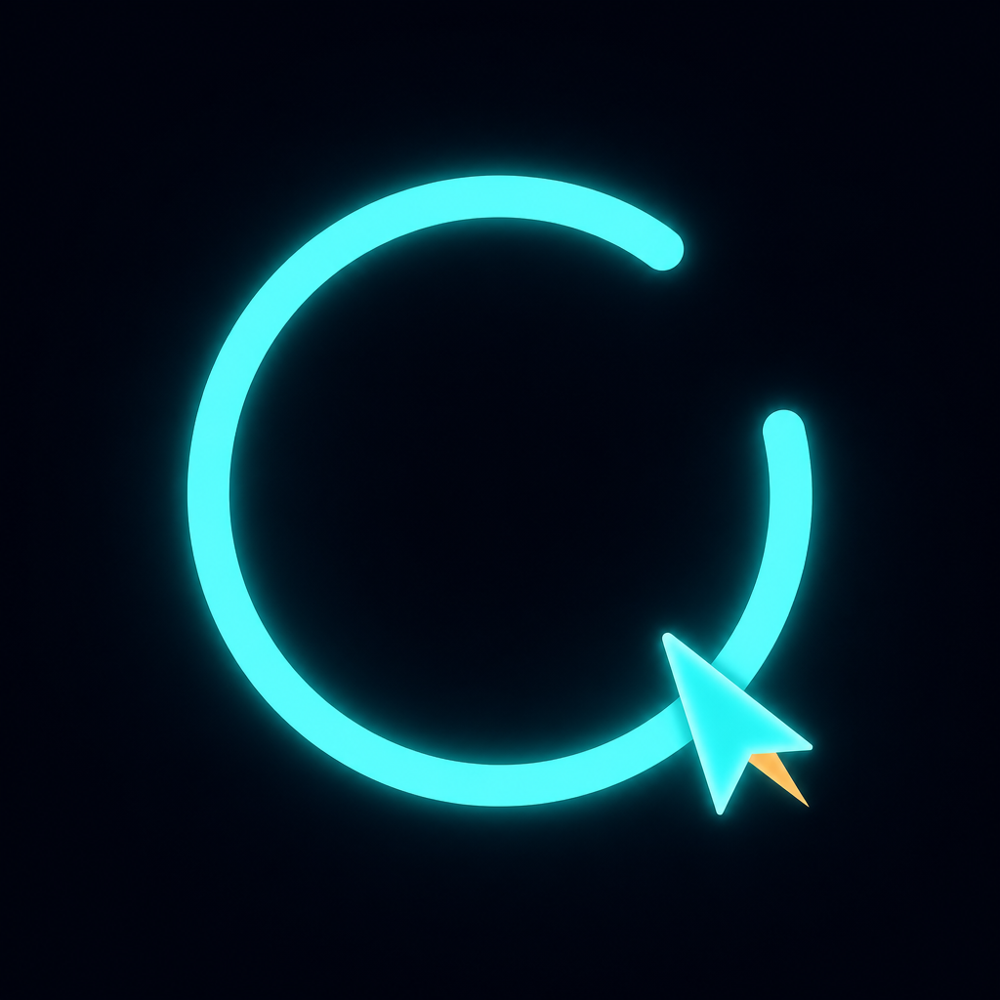
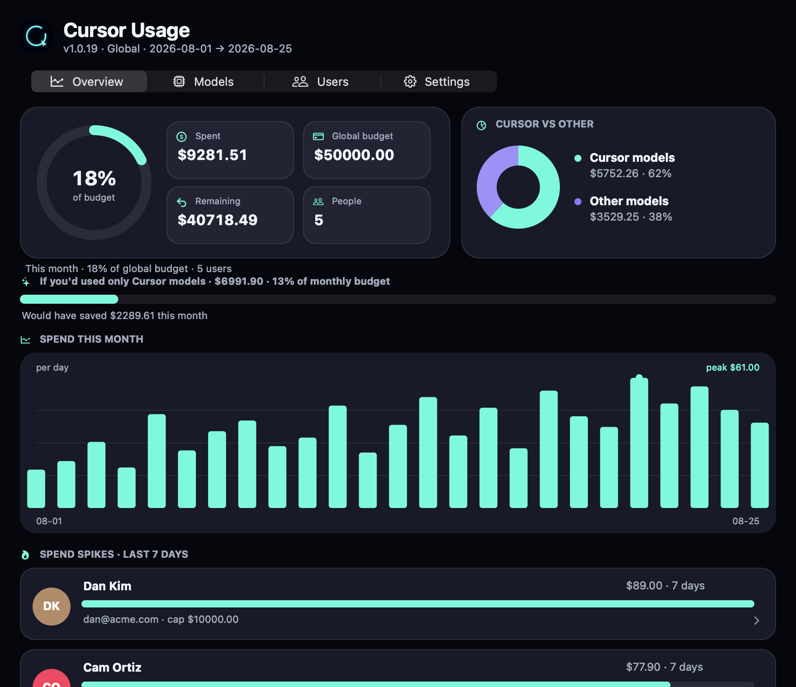
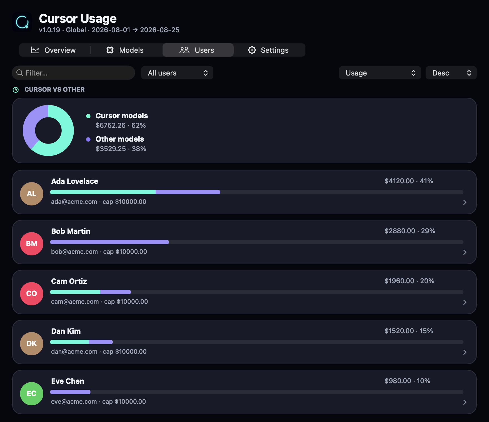
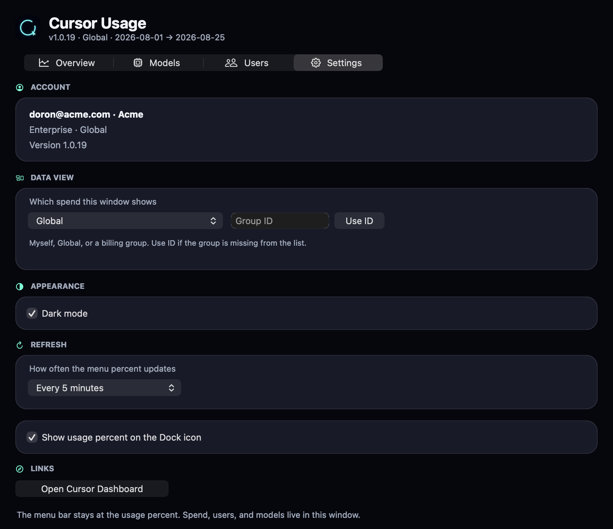

Cursor UsagemacOS menu bar · Apple Silicon
A native menu-bar app for the Cursor plan you’re already signed in to. Percent in the bar. Global budget, groups, and model filters one click away.
.pkg. If macOS blocks it, right-click → Open.
The menu bar and Dock badge show 18% — not a paragraph. Click for the rest.
View → Global is the enterprise cap from Cursor’s usage summary. Groups stay one click away.
Filter the model window to Cursor models, everything else, or all of it.
Reads Cursor’s local session read-only. Never writes the DB. Never refreshes OAuth.
Overview, people, and settings — captured from the menu-bar window.


Highlights for this build, then earlier ones.